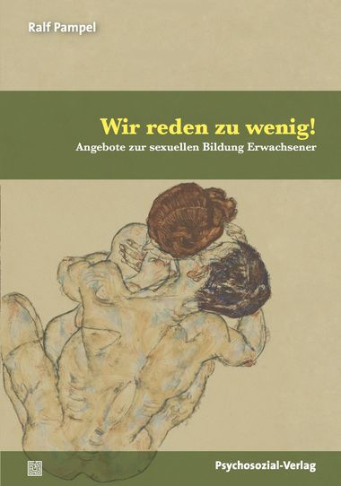

Ralf Pampel
Diplom-Sozialpädagoge (BA)
M.A. Angewandte Sexualwissenschaft (HS Merseburg)
Referent für Sexuelle Bildung & Sexualpädagogik
Veröffentlichungen
Wir reden zu wenig! – Angebote zur sexuellen Bildung Erwachsener
Ab Februar 2019 erhältlich im Psychosozial-Verlag und im Buchhandel.
Sexualität ist ein lebenslanger Prozess, der im Erwachsenenalter zu einer besonderen Veränderbarkeit der sexuellen Erfahrungen und Wünsche führt. Zugleich ist die Sexualität erwachsener Menschen von Herausforderungen und Möglichkeiten geprägt. Auf der einen Seite schafft die mediale Darstellung und Dauerpräsenz von Sexualität Zwänge und Anforderungen, wie der ideale Sex und der ideale Körper aussehen sollen. Auf der anderen Seite herrschen nach wie vor eine kulturell geformte Scham und persönliche Sprachlosigkeit im Umgang mit sexuellen Themen.
“Wir reden zu wenig!” bietet einen Einblick in verschiedene wissenschaftliche Zugänge zur Thematik, und stellt in Interviews Menschen vor, die Bildungsmöglichkeiten zur Erwachsenensexualität anbieten – damit wird ein höchst informativer und lebendiger Ausblick auf einen angemessenen Umgang mit Erwachsenensexualität geschaffen.
Vita
2016 – heute
Freiberufliche selbständige Tätigkeit als Sexualpädagoge und Referent für Sexuelle Bildung
2012 – 2016
Studium Angewandte Sexualwissenschaft, Hochschule Merseburg M.A. (Master of Arts) Angewandte Sexualwissenschaft
2007 – 2012
Konzeptionelle Arbeit und Arbeit als Gruppenpädagoge in Leipziger Kitas
2006
EU-Programm Leonardo DaVinci Soziale Arbeit im Centre Social et Culturel Bacalan, Bordeaux, Frankreich
2005
Auslandsaufenthalt in mehreren Ländern Ost- und Südosteuropas Freiwillige Arbeit in sozialen Projekten
2001 – 2004
Praktikum und Arbeit als Sozialpädagoge, PED Kerber, Meißen Kinder- und Jugendhilfe
2001 – 2004
Studium Sozialpädagogik, Beruksakademie Sachsen/Breitenbrunn Staatlich anerkannter Diplom-Sozialpädagoge